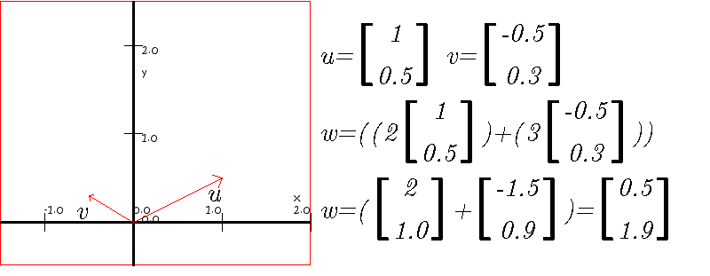
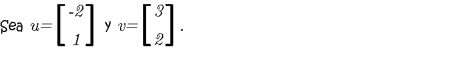
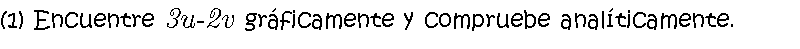
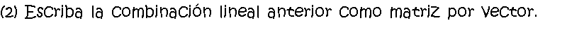
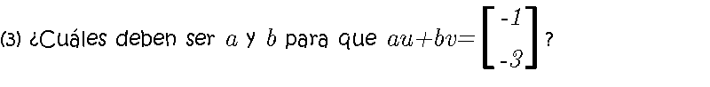
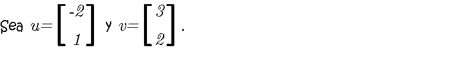
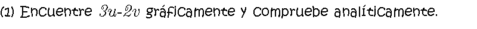
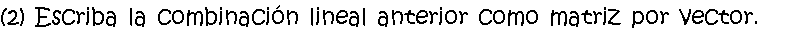
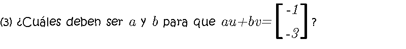

En una combinación lineal primero se multiplica cada vector por una constante y luego se suman
La combinación lineal se puede escribir como la multiplicación de una matriz por un vector, los vectores forman la matriz y los escalares forman el vector
La operación matriz por vector también se puede realizar combinando cada renglón de la matriz con el vector
 



Comentarios y sugerencias: gmunoz@udistrital.edu.co




Comentarios y sugerencias: gmunoz@udistrital.edu.co